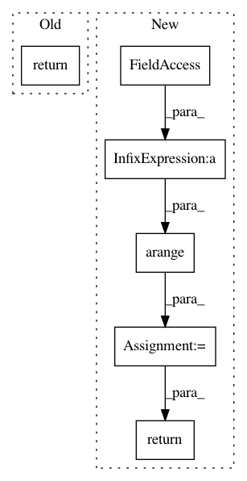

90092a23db57abba13808dbf96100e07fc4797ac,kraken/lib/ctc.py,_CTC,backward,#_CTC#,106
Before Change
return loss
def backward(self, grad_output):
return self.grads, None, None, None
class CTCCriterion(Module):
r
After Change
label_prob = self.label_probability(self.yseq.shape[2],
self.path,
self.path_length,
np.exp(self.prob_trans - total_probability[:, None]))
self.yseq -= label_prob
// mask
self.yseq *= (np.arange(len(self.yseq))[:, None] < self.input_length)[..., None]
return torch.tensor(self.yseq).permute(1, 2, 0), None
class CTCCriterion(Module):
r
In pattern: SUPERPATTERN
Frequency: 3
Non-data size: 6
Instances
Project Name: mittagessen/kraken
Commit Name: 90092a23db57abba13808dbf96100e07fc4797ac
Time: 2018-05-14
Author: mittagessen@l.unchti.me
File Name: kraken/lib/ctc.py
Class Name: _CTC
Method Name: backward
Project Name: librosa/librosa
Commit Name: 2ebc46e0b88697f7b70f3fa71c4afc7e959562a2
Time: 2013-03-23
Author: brm2132@columbia.edu
File Name: librosa/feature.py
Class Name:
Method Name: mel_frequencies
Project Name: librosa/librosa
Commit Name: acdfae1811d94b423c34987a598c2dda0fde362c
Time: 2017-07-27
Author: brian.mcfee@nyu.edu
File Name: librosa/display.py
Class Name:
Method Name: __coord_tempo